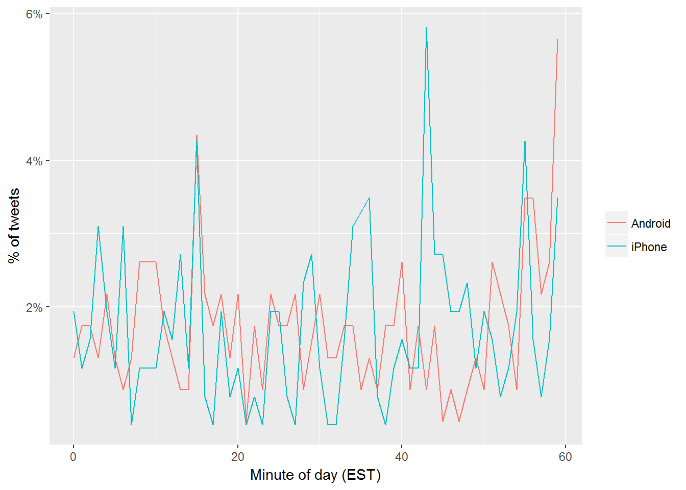
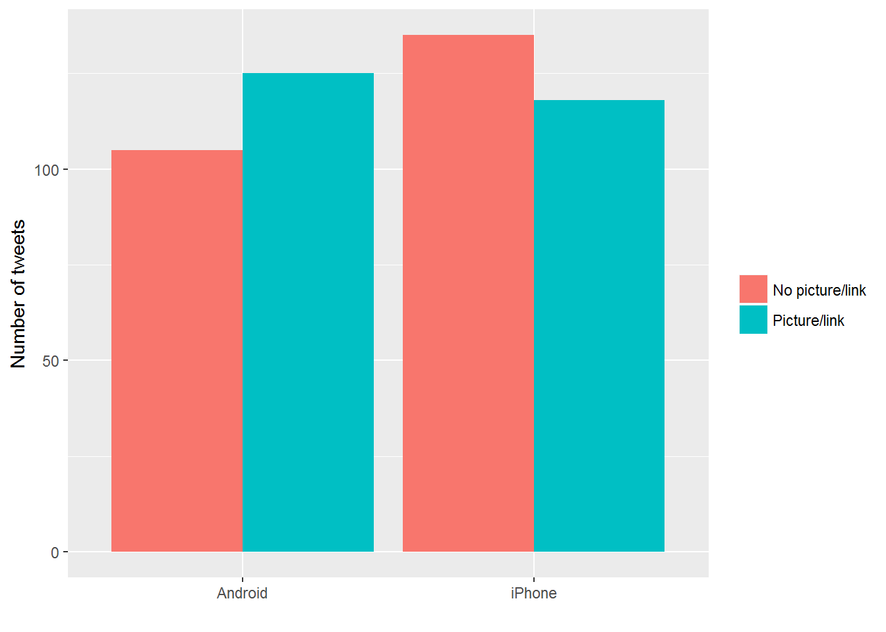
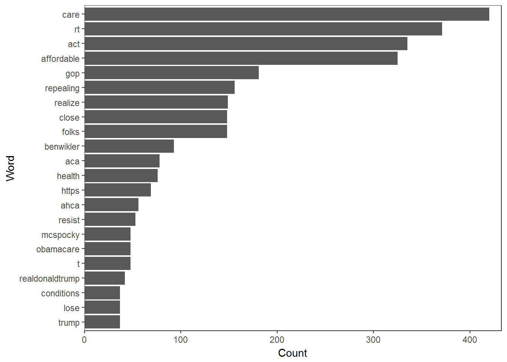
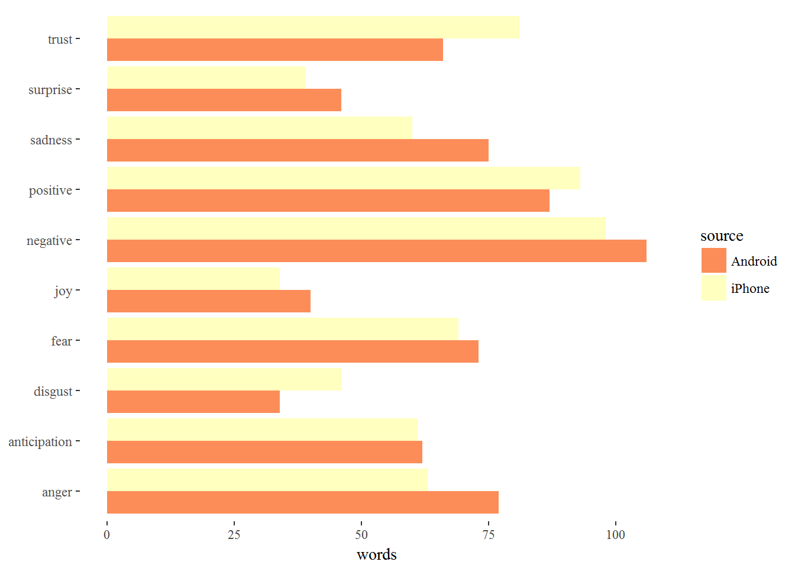
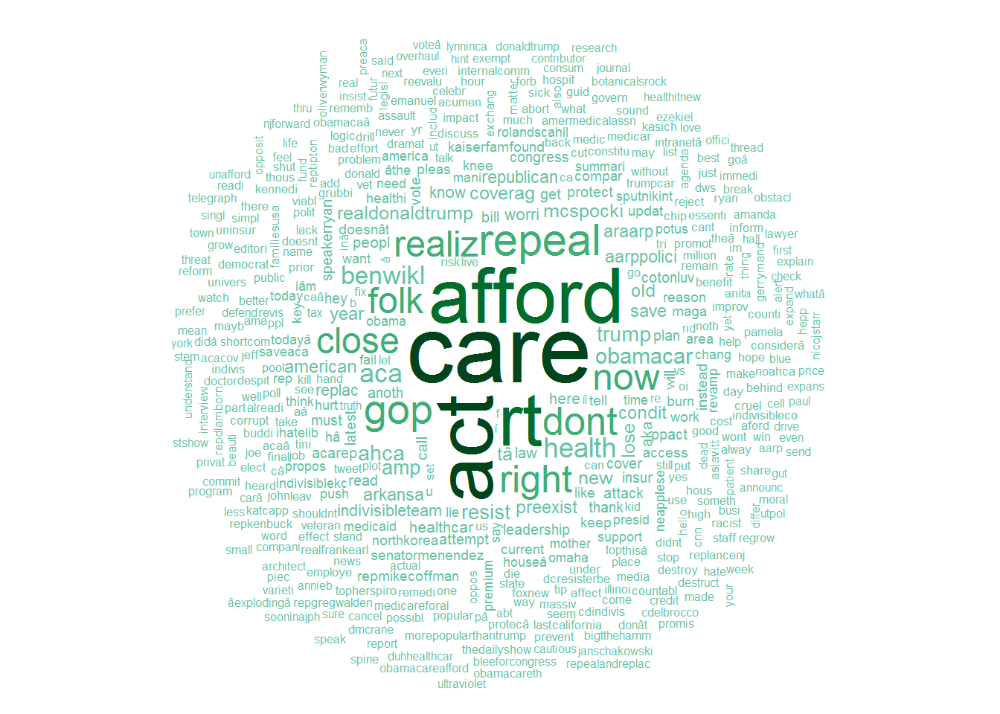

Get some tweets from Twitter to analyze and visualize Set up Twitter API: Selecting data including Obamacare, ACA, Affordable Care Act, and #ACA (n=1000)
Who was tweeting most in the sample we collected
Let’s have a go at parsing some tweets, pulling out the names of folk who have been retweeted or who have had a tweet sent to them:
figure 13_
Extracting the source application. (We’re looking only at the iPhone and Android tweets- a much smaller number are from the web client or iPad). Overall, this includes 388 tweets from iPhone, and 256 tweets from Android. One consideration is what time of day the tweets occur, which we’d expect to be a “signature” of their user. Here we can certainly spot a difference:
##
## Android iPhone
## 230 258
figure 14_ In the remaining by-word analyses in this text, we filter these quoted tweets out (since they contain text from followers that may not be representative of original tweets. Somewhere else we can see a difference involves sharing links or pictures in tweets. 
figure 15_ Comparison of words Now that we’re sure there’s a difference, what can we say about the difference in the content? We’ll use the tidytext package. We start by dividing into individual words using the unnest_tokens function, and removing some common stopwords.

Sentiment analysis: Since we’ve observed a difference in sentiment between the Android and iPhone tweets, let’s try quantifying it. We’ll work with the NRC Word-Emotion Association lexicon, available from the tidytext package, which associates words with 10 sentiments: positive, negative, anger, anticipation, disgust, fear, joy, sadness, surprise, and trust.
To measure the sentiment of the Android and iPhone tweets, we can count the number of words in each category. (For example, we see that 41 of the 2331 words in the Android tweets were associated with “anger”). We then want to measure how much more likely the Android account is to use an emotionally-charged term relative to the iPhone account. Since this is count data, we can use a Poisson test to measure the difference:
figure 16_ 
Data Preparation using Twitter: The Twitter search API does not return an exhaustive list of tweets that match your search criteria, as Twitter only makes available a sample of recent tweets. For a more comprehensive search, we will need to use the Twitter streaming API, creating a database of results and regularly updating them, or use an online service that can do this. Now that we have tweet texts, we need to clean them up before doing any analysis. This involves removing content, such as punctuation, that has no emotional content, and removing any content that causes errors.
Text Cleaning
figure 17_ Frequent Words and Associations
figure 18_ Word Cloud 
Topic Modelling
## Topic 1 Topic 2 Topic 3 Topic 4 Topic 5 Topic 6 Topic 7
## [1,] "act" "care" "care" "care" "care" "care" "act"
## [2,] "repeal" "act" "afford" "afford" "act" "rt" "now"
## [3,] "now" "afford" "act" "rt" "realiz" "act" "care"
## [4,] "afford" "dont" "rt" "repeal" "now" "repeal" "realiz"
## [5,] "gop" "repeal" "now" "folk" "rt" "dont" "afford"
## [6,] "close" "folk" "close" "right" "dont" "right" "close"
## Topic 8
## [1,] "act"
## [2,] "rt"
## [3,] "afford"
## [4,] "gop"
## [5,] "dont"
## [6,] "right"